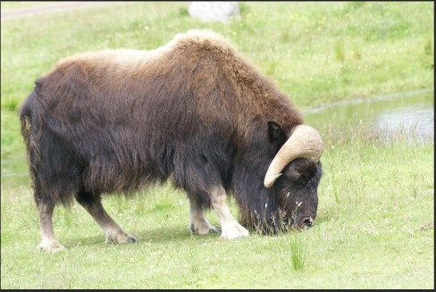

Le boeuf musqué, vit dans les régions glacées de l'arctique, a failli disparaitre à cause des chasseurs. il est maintenant protégé.
Il mesure plus de 2m de long et pèse entre 250 et 359kg. Les longs poils du boeuf musqué le protègent des vents froids et violents qui soufflent dans le grand nord. En hiver, ils descendent jusqu'a ses sabots
Pour se défendre contre les loups, les boeufs se mettent en cercle, plaçant leurs petits au centre pour les protéger. Ils utilisent la technique pour lutter contre le froid pendant les tempetes. Les vieux males ont les plus de mauvainses places.